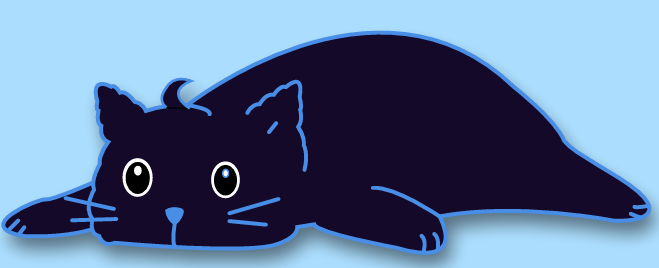

¡Bienvenido a la sección de Ejercicios Mindfulness!
Es importante comprender que las actividades y ejercicios propuestos en este espacio no deben considerarse bajo ninguna circunstancia como un reemplazo de la atención médica o el tratamiento psicológico profesional. La plataforma funciona como un apoyo preventivo y de acompañamiento, pero no tiene la capacidad de diagnosticar ni tratar condiciones clínicas de salud mental.
Para que estas herramientas tengan un impacto real en tu bienestar, es esencial integrarlas en tu rutina diaria con constancia. Los beneficios del mindfulness no suelen ser inmediatos ni mágicos, sino que se desarrollan de manera gradual conforme el cuerpo y la mente se habitúan a estos momentos de pausa. Por esta razón, es fundamental tener paciencia con los resultados y evitar la frustración si al principio parece difícil concentrarse o si no se percibe un cambio drástico de inmediato.
Para aprovechar al máximo los beneficios de estas técnicas, es fundamental encontrar un espacio tranquilo donde sea posible permanecer sin interrupciones durante algunos minutos. La postura depende totalmente de la preferencia personal, ya que los ejercicios pueden realizarse cómodamente sentado con la espalda recta o incluso acostado si eso facilita la relajación. Lo más importante durante la práctica es mantener una actitud de apertura y paciencia con uno mismo.
ES MUY IMPORTANTE QUE ANTES DE LOS EJERCICIOS REALICES LA INTRODUCCIÓN. Puedes colocar un reloj para medir el tiempo de los ejercicios y música adecuada para prácticarlos.
Introducción:
¿Cómo realizar los ejercicios?
Antes de practicar cualquiera de los ejercicios debes realizar esta introducción para buscar calmar tu cuerpo y mente haciendo que los mismos estén listos para elaborar los ejercicios. Para ello sigue estos pasos:
- Puedes realizar los ejercicios en cualquier hora de tu día pero es recomendable practicarlos al despertar, en el medio día o en la noche después de cenar.
- Busca un lugar apartado donde te sientas seguro y cómodo, que sea ventilado y tenga el suficiente espacio como para poder sentarte o acostarte en el piso (También puedes utilizar una silla o tu cama, solo procura no quedarte dormido)
- Ya sentado o acostado, coloca las manos sobre tu regazo, relaja los músculos de todo tu cuerpo, relaja las cejas y mandíbula, endereza la espalda, busca regular tu respiración.
- Aleja de tu mente los pensamientos o recuerdos, apártalos de ti cada que aparezcan, busca pensar en nada.
- Mientras alejas los pensamientos, sigue este ejercicio de respiración: Inhala aire hasta contar hasta 5, concéntrate en sentir como el aire entra en tu nariz y entra a tus pulmones para nutrirlo, mantén el aire en tus pulmones durante 5 segundos y luego exhala todo el aire contenido concentrándote esta vez en sentir como el aire se va de tus pulmones.
Cuando te sientas centrado, que los pensamientos ya están alejados y habiendo realizado el ejercicio de respiración ¡Puedes continuar con el ejercicio de tu preferencia!
Duración de la introducción: Min 5 min. Max 10 minSi se te dificulta la introducción hay una forma más simple de entrar en calma siguiendo este ejercicio: En un momento de tu día (ya sea en la mañana al desayunar, en la tarde al tomar un descanso o en la noche después de cenar), en un lugar en donde te sientas cómodo y estés a solas, siéntate y relaja los músculos desde los de la cara (cejas, mandíbula etc.) hasta los del cuerpo (hombros, manos, piernas y espalda).
Para continuar, coloca una de tus manos en la altura de tu ombligo y tu otra mano en la altura de tu cabeza, evita que ambas manos toquen tu cuerpo, así sube la mano que está en la altura de tu ombligo hasta que alcance la mano que está a la altura de tu cabeza, mientras subes la mano inhala aire para tus pulmones hasta que ambas manos lleguen hasta la altura de tu cabeza. Luego baja ambas manos hasta tu ombligo mientras exhalas todo el aire contenido.
Durante el ejercicio evita en pensar en otra cosa que no sea el ejercicio. Repite esto hasta que tu cuerpo se sienta menos tenso, tu respiración este regulada y tu postura sea la correcta.
Índice de Ejercicios
¡Hora de Practicar!
Ejercicio Nº1
El ejercicio de la fruta
Ejercicio Nº2
Escaneo Corporal
Ejercicio Nº3
Escúchate a ti mismo
Ejercicio Nº4
Los cinco sentidos
Ejercicio Nº5
Un observador
Ejercicio Nº6
Caminata consciente
Ejercicio Nº7
Hojas Caídas
Ejercicio Nº8
En las nubes
